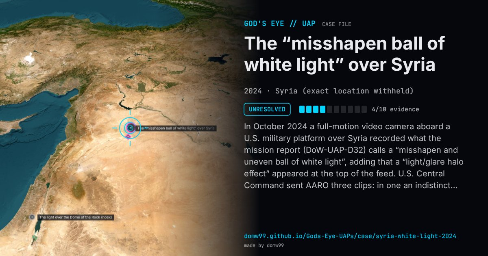

The “misshapen ball of white light” over Syria

In October 2024 a full-motion video camera aboard a U.S. military platform over Syria recorded what the mission report (DoW-UAP-D32) calls a “misshapen and uneven ball of white light”, adding that a “light/glare halo effect” appeared at the top of the feed. U.S. Central Command sent AARO three clips: in one an indistinct multi-coloured patch crosses the top edge of the display within a second; in another a half-oval of white and red highlights sits at the top edge; in the third two semi-transparent orange shapes overlay the picture for under two seconds each. They were released in May 2026 as DOW-UAP-PR31 to PR33.
Explanation
AARO released the three clips in 2026 as unresolved. The mission report itself notes a “light/glare halo effect” at the top of the video feed, and the clips last five or six seconds each, so an optical artefact cannot be excluded.
What was seen
Shape: A “misshapen and uneven ball of white light”, with white, red and orange patches on the video
Witnesses: The crew of a U.S. military platform over Syria
Duration: Three clips of five or six seconds
Sources
Browse
- 2020s
- Unresolved
- Photo and video cases
- Official government documents
- Video footage
- Lights and fireballs
- Spheres and orbs